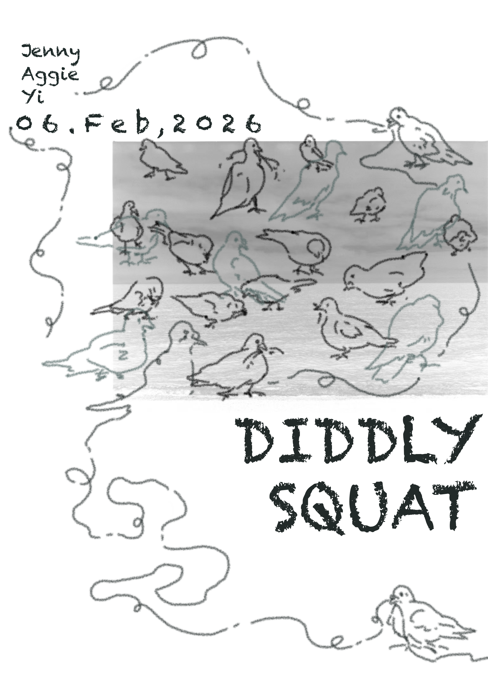
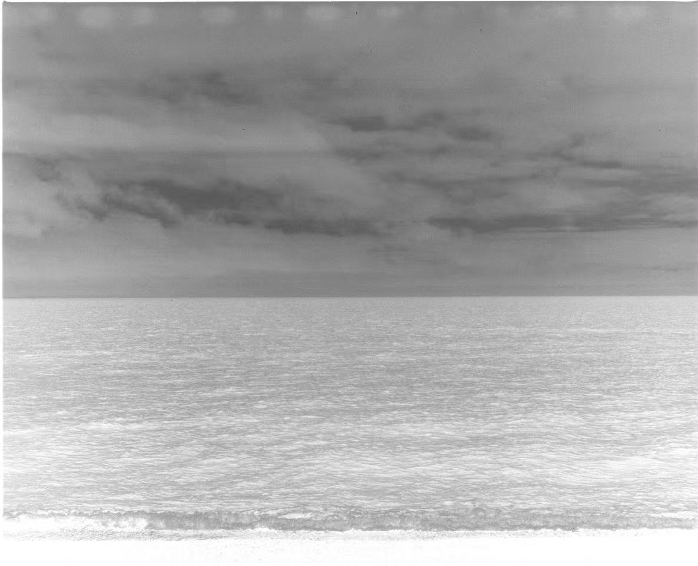
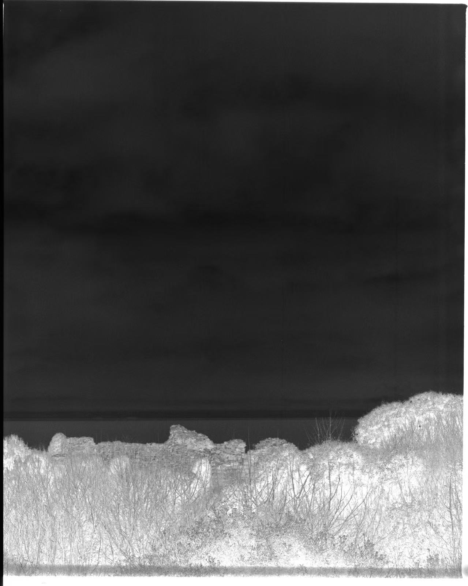
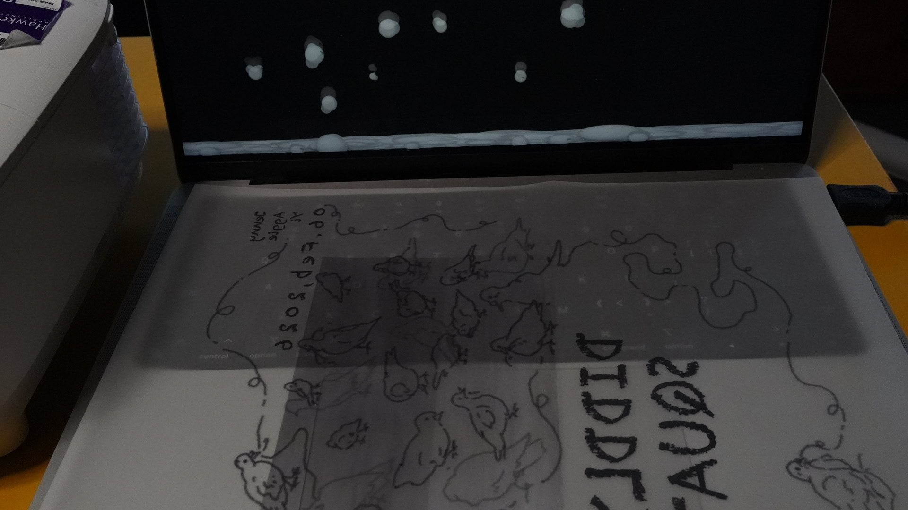
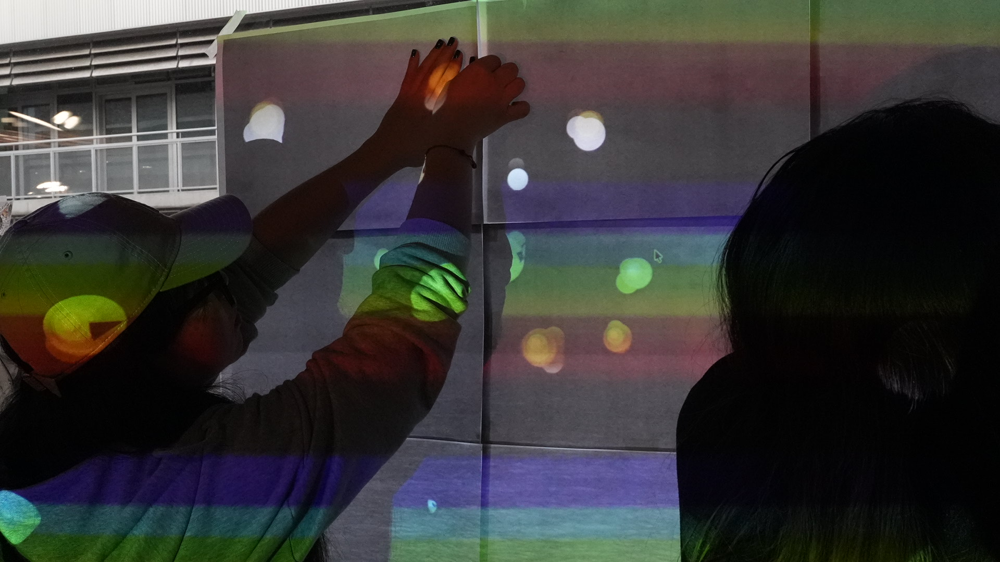
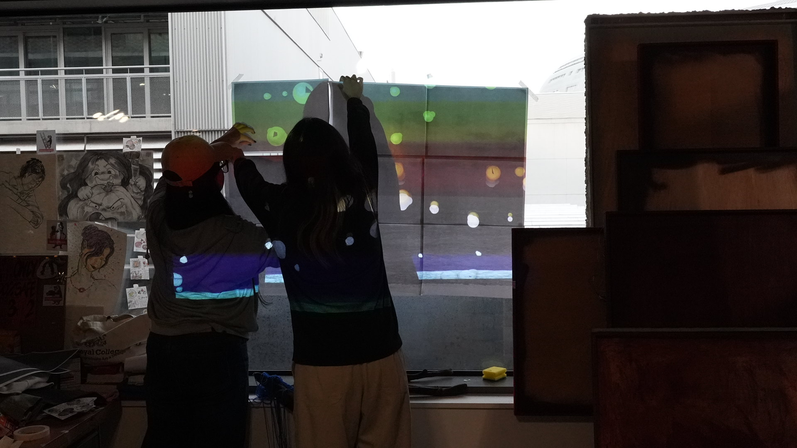

ABOUT
Art History Series
What is it?
modernism
Producer: Yuchen Yang, Jiaming Sheng, Yi Huang
Content: What exactly are works of art? They will eventually sink into history, leaving behind only a few obscure messages.
From the pigeon's perspective, those so-called “masterpieces” that humans mock as useless, unaware of their own significance, are actually no different from humanity's own predicament...

Format: Composite Materials、 animation
Tech: analogue photography、text、 visual studio code
艺术史系列
何为
现代主义
制作人：杨雨晨、盛家茗、黄熠
内容：艺术品究竟是什么，它们终将沉入历史，只留下些许晦涩的讯息。在鸽子的视角里，那些不自知的，被人类调侃为无用的所谓“杰作”，实际和人类自身的处境一样……

形式：综合材料、动画
技术：胶片摄影、文本、图形化编程





自检：这件作品最初是一件结合我个人艺术史观、并具有自我反思意味的行为艺术；随后我与两位同学合作，将其转化为一个与鸽子相关的观念作品。我将艺术方法划分为现代、后现代与当代三类。我强烈排斥以“现代”（为了艺术而艺术的）初心来创作；同时，我长期使用无意识的拼贴素材进行影像生产，这也进一步促使我在实践上部分弃置设计含义方法。然而在艺术学院的语境中，我仍不得不面对我为异类的这一事实。
Self Reflection: This piece began as a performance art work that combined my personal art historical perspective with self-reflection. Later, I collaborated with two classmates to transform it into a conceptual work involving pigeons. I categorize artistic approaches into three types: modern, postmodern, and contemporary. I strongly reject creating with the “modern” (art for art's sake) mindset. Simultaneously, my longstanding practice of producing images using unconscious collage materials has further led me to partially abandon design-oriented methods in my work. Yet within the art academy context, I still must confront the fact that I remain an outsider.
© 2026 All Rights Reserved.